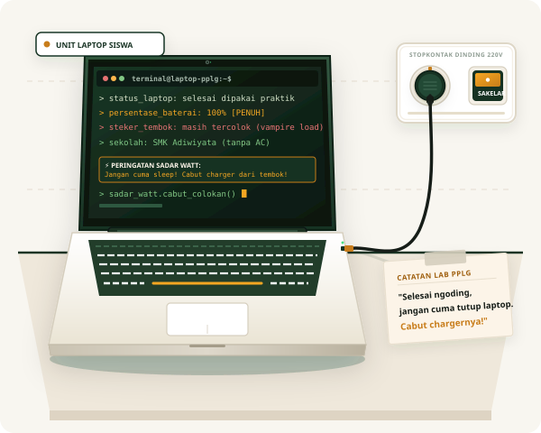

01
Membuka Mata Sebelum Menutup Pintu
Menumbuhkan refleks otomatis bagi siswa dan guru: setiap kali menjadi orang terakhir yang keluar ruangan, pastikan sakelar lampu, kipas angin dinding, dan proyektor dalam posisi mati.
"Listrik jalan terus kalau kita nggak sadar."
Berapa banyak kipas angin dinding yang tetap berputar kencang di ruang kelas kosong saat jam olahraga? Berapa charger laptop di meja kelas dan lab yang terus menancap semalaman padahal baterainya sudah penuh? Sebagai sekolah Adiwiyata yang mengandalkan ventilasi alami tanpa AC, hemat energi adalah ujian konsistensi kita yang sesungguhnya.
Di kelas maupun lab saat memakai laptop, kebiasaan menekan sakelar stopkontak ke posisi OFF sepulang sekolah bisa memangkas daya listrik laten hingga puluhan kilowatt tiap minggunya.

Sebagai sekolah berwawasan lingkungan (Adiwiyata), kita sudah membuktikan komitmen dengan tidak memakai pendingin ruangan (AC). Tapi predikat Adiwiyata bukan cuma plang di gerbang — pemborosan listrik laten tetap mengintai di balik sakelar kipas angin dan colokan kelas kita.
Di sekolah kita yang berpredikat Adiwiyata, ketiadaan AC adalah langkah sadar demi menekan jejak karbon dan emisi gas rumah kaca. Sekolah kita dirancang dengan sirkulasi udara alami yang segar, deretan jendela kelas yang lebar, serta naungan pohon-pohon rindang yang dibantu hembusan kipas angin dinding. Ini adalah kebanggaan bersama yang sepatutnya kita syukuri dan rawat.
Namun, justru karena merasa "sekolah kita tidak pakai AC", sering kali muncul titik buta: deretan 4 hingga 6 kipas angin dinding di tiap kelas dibiarkan terus berputar sia-sia saat ruangan kosong ditinggal olahraga, upacara, atau istirahat. Ditambah proyektor yang menyala tanpa pemakaian dan fenomena phantom load dari puluhan adaptor charger laptop yang dibiarkan menancap di stopkontak. Di sekolah Adiwiyata, pemborosan energi sekecil apa pun adalah kontradiksi yang harus kita selesaikan bersama.
Charger laptop dan HP yang ditinggal colok di meja kelas tetap mengonsumsi daya 0,5 – 3 Watt secara terus-menerus tanpa henti.
Saat jam olahraga, upacara, atau istirahat siang, 4–6 unit kipas angin dinding sering kali dibiarkan menderu kencang tanpa ada satu pun orang di kelas.
Laptop yang ditutup layarnya dalam mode sleep sambil kabel adaptor tetap terpasang terus menyedot arus listrik. Shutdown dan cabut charger adalah kuncinya.
Kami tidak menuntut perubahan besar yang rumit. Target kampanye ini dirancang spesifik agar dapat dijalankan langsung oleh siapa pun di lingkungan sekolah Adiwiyata kita.
Menumbuhkan refleks otomatis bagi siswa dan guru: setiap kali menjadi orang terakhir yang keluar ruangan, pastikan sakelar lampu, kipas angin dinding, dan proyektor dalam posisi mati.
Membuka jendela lebar-lebar untuk memanfaatkan hembusan angin alami saat pagi hari yang sejuk, serta memadamkan sakelar kipas angin begitu kelas ditinggalkan kosong.
Menghentikan kebiasaan membiarkan kabel roll berserakan dalam kondisi switch ON seusai jam pelajaran produktif atau sesi coding selesai.
Kelompok Proyek PPLG-3
Ikeh, Manu, Nara Andra TyagaKelas XI PPLG-3
Pengembangan Perangkat Lunak dan Gim